GAMES 202 - Physically-Based Rendering
-
Physically-Based Rendering (PBR)
- Everything in rendering should be physically based
- Materials, lighting, camera, light transport, etc.
- Not iust materials, but usually referred to as materials
-
PBR materials in RTR
- For surfaces, mostly just microfacet models (used wrong so not PBR) and Disney principled BRDFs (artist friendly but still not PBR)
- For volumes, mostly focused onfast and approximate single scattering and multiple scattering (for cloud, hair, skin, etc.)
- Usually not much new theory, but a lot of implementation hacks
- Still, performance (speed) is the key factor to consider
Microfacets
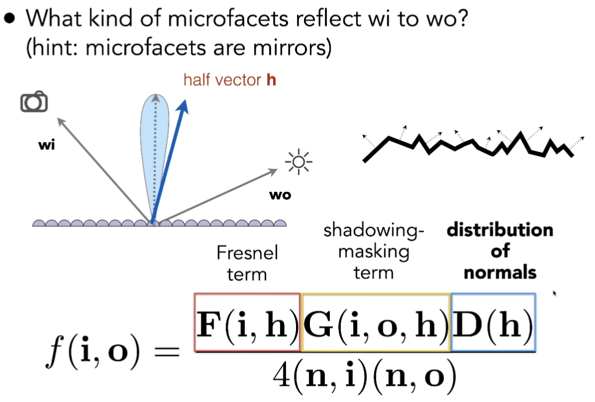
- Normal Distribution Function (NDF)
- Key: the distribution of microfacets’ normals
- Concentrated <==> glossy
- Spread <==> diffuse
- various models to describe it: Beckmann, GGX, etc.
- Backmann
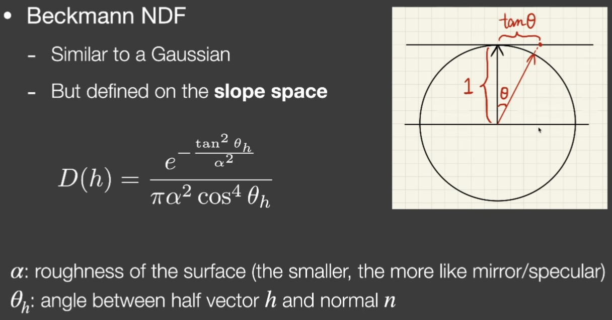 - GGX
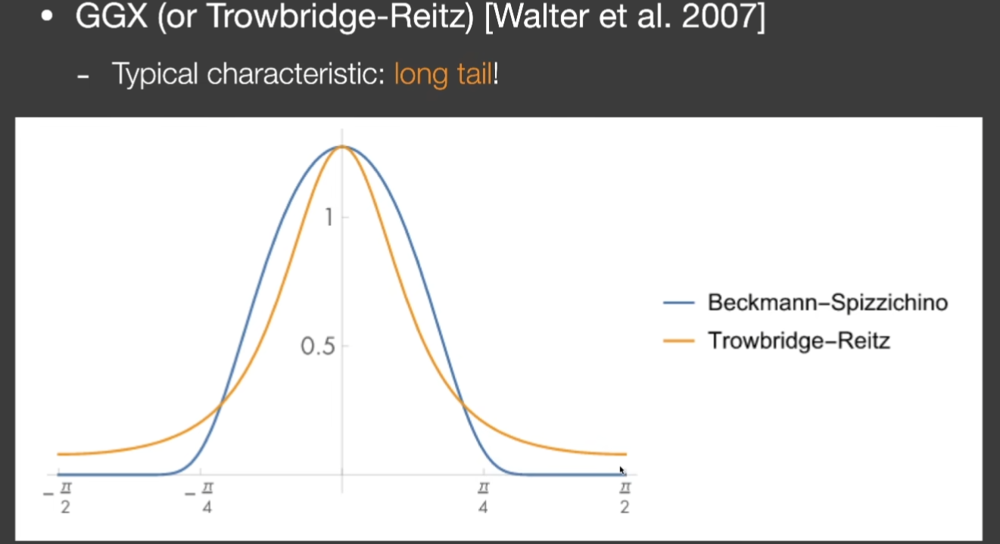
Note that the long tail of GGX make it smoother. See the figure below, when Backmann and GGX have the same highlight area, Backmann has obvious boundary arond the highlight area while GGX has bloom around it. And for more rough material, GGX can make it more diffuse and natural. This is why in industry people usually choose GGX.
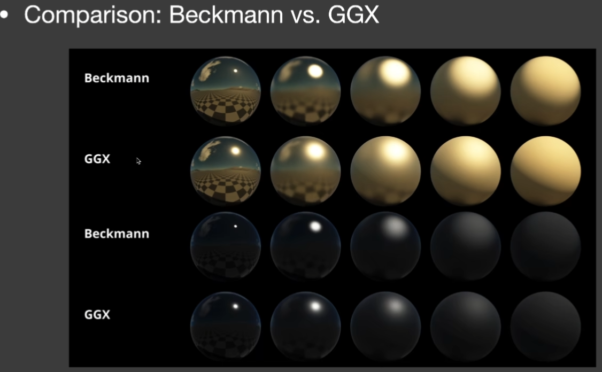 - GTR
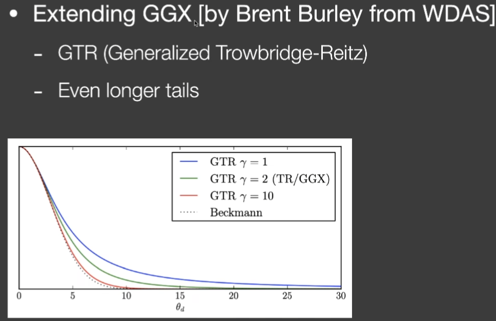
- Backmann
- Key: the distribution of microfacets’ normals
- Geometry Term
If not G term, when n dot i == 0 (graze angle), the denominator of the brdf equation can be really large.
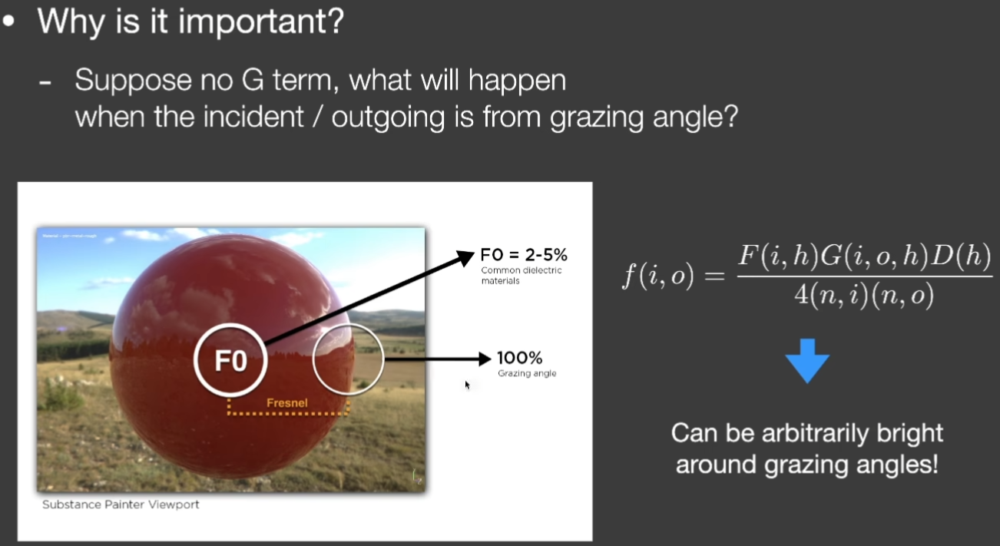 - Fresnel Term
Multiple bounces
- Missing energy!
- Especially prominent when roughness is high (when roughness is higher, more light will be reflected and these reflected light are lost)
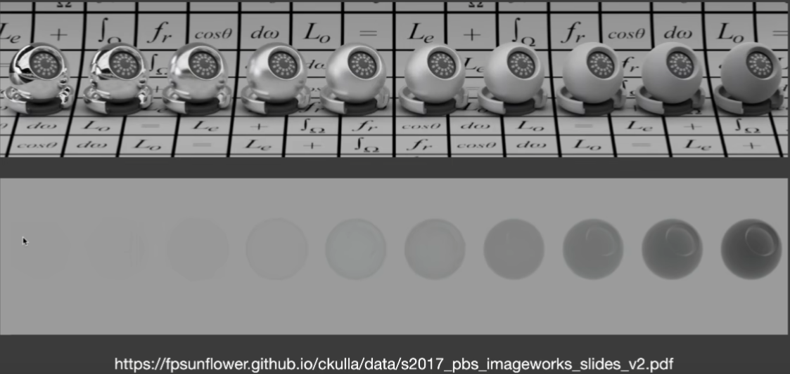
- Especially prominent when roughness is high (when roughness is higher, more light will be reflected and these reflected light are lost)
- Adding back the missing energy?
- Accurate methods exist [Heitz et al. 2016]
- But can be too slow for RTR
- The Kulla-Conty approximation
- TBD (L10 1:03:10)
Shading Microfacet Models using Linearly Transformed Cosines (LTC)
- Solves the shading of microfacet models
- Mainly on GGX, though others are also fine
- Not considering shadows
- Under polygon-shaped lighting
- Key idea
- Any outgoing 2D BRDF lobe can be transformed to a cosine
- The shape of the light can also be transformed along
- Integrating the transformed light on a cosine lobe is analytic
- Observations
- BRDF -> Cosine
- Direction: i -> i’
- Domain to integrate: p -> p’
- Approach

Disney’s Principled BRDF
-
Motivation
- No physically-based materials are good at represent all real materials
- e.g. lacking diffuse term in most microfacet models
- Physically-based materials are not artist friendly
- e.g. “the complex index of refraction n-ik”
- No physically-based materials are good at represent all real materials
-
High level design goal
- Art directable, not necessarily physically correct.
- But again, referred to as PBR in real-time rendering.
-
What is “principled”?
- Intuitive rather than physical parameters should be used.
- There should be as few parameters as possible.
- Parameters should be zero to one over their plausible range.
- Parameters should be allowed to be pushed beyond their plausible range where it makes sense.
- All combinations of parameters should be as robust and plausibleas possible.
-
How does it work?
- subsurface: more diffuse than diffuse
- specularTint: specular with specific color
- sheen: simulate the soft, fuzzy highlights characteristic of microfiber surfaces, like velvet, satin, or felt. This effect is caused by tiny fibers sticking up from the surface that scatter light.
- sheenTint: This value controls the color of the sheen highlight. By default, the sheen is white. The sheenTint parameter allows you to blend the material’s base color into the sheen highlight, creating a richer, more saturated, and more realistic look for colored fabrics. A value of 0 gives a white sheen, while a value of 1 fully tints the sheen with the object’s base color.
- clearcoat: simulate a thin, transparent layer of lacquer or varnish on top of a base material. This is common on materials like car paint, polished wood, or carbon fiber. Clearcoat value controls the strength or thickness of the transparent layer.
- clearcoatGlossy: This controls the smoothness or sharpness of the reflections on the clearcoat layer itself. A high “glossy” value (or low “roughness”) results in sharp, mirror-like reflections on the coating. A lower value simulates a rougher, more diffuse coating, resulting in blurry or hazy reflections.
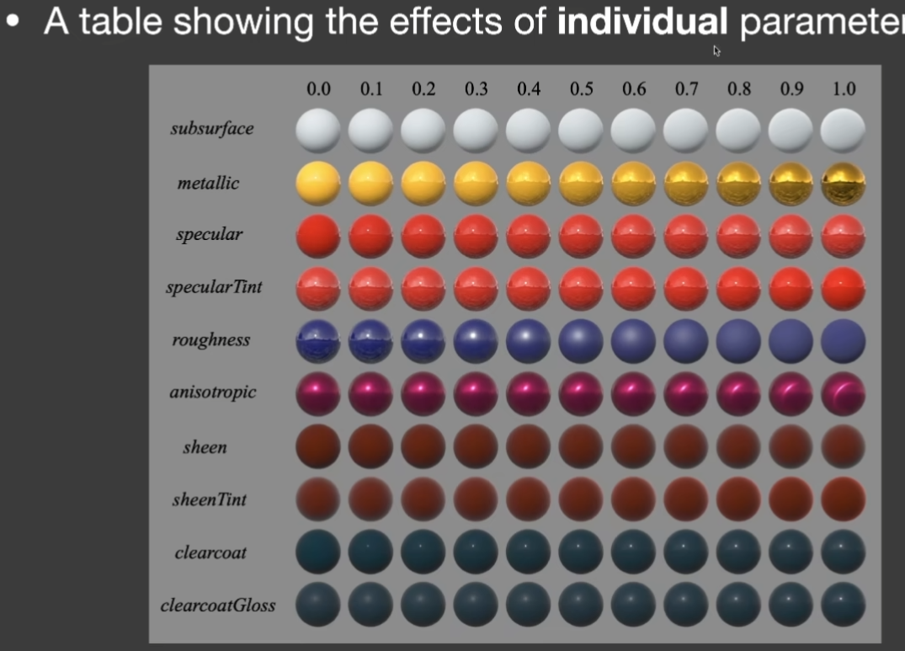
-
Pros and Cons
- Easy-to-understand / control
- A wide range of materials in a single mode
- Open source implementation is available
- Not physically based
- Huge parameter space
Non-Photorealistic Rendering (NPR) == (fast and reliable) stylization
- Characteristics of NPR
- Starts from photorealistic rendering
- Exploits abstraction
- Strengthens important parts
Outline Rendering
-
Outlines are not just contours
- Boundary / border edge
- Crease (折痕)
- Material edge
- Silhouette edge (it should be the outermost edge and should be shared by several faces)
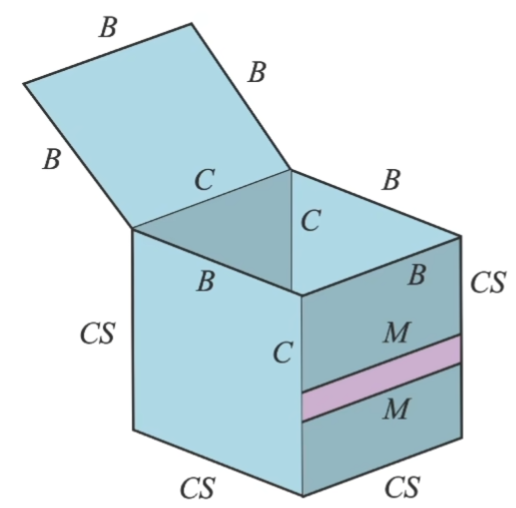
-
Implementations
- Shading: shading normal contour edges
- Darken the surface area where the shading normal is perpendicular to viewing direction
- Use smoothstep() to create edge fading effect
- issue: edge at different places may have different witdths. Wider if the normals change smoothly and narrower if the normals change quickly.
- Geometry: Backface fattening
- Render front face normally
- “Fatten” backfaces (make backfaces the expected edge color), then render again
- Extension: fatten along vertex normals
- Image: Edge detection in images
- Usually use a Sobel detector
- Shading: shading normal contour edges
Color blocks
- Two different ways
- Hard shading: thresholding on shading
- Posterization: thresholding on final image color
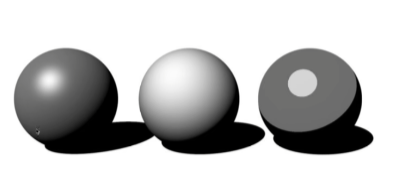
- May not be binary: Quantization
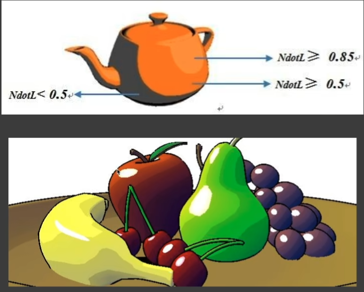 - Different styles on different components
Strokes Surface Stylization
- Sometimes we do not want color blocks. Instead we want to mimic sketching.
- Idea:
- Replace point-wise shading with pre-generated stroke textures
- Density?
- Continuity?
- Tonal art maps (TAMs)
- Strokes of different densities
- Each density has a MIPMAP (use mipmap to avoid the effect when the object is farther the texture density increases and so the texture looks darker)
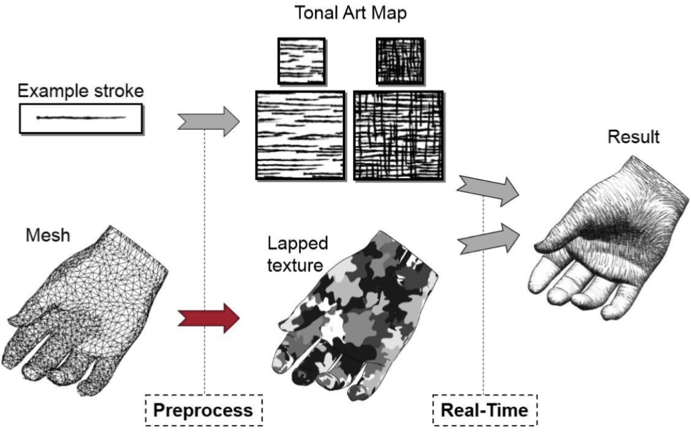
GAMES 202 - Physically-Based Rendering
http://example.com/2025/09/16/GAMES202-L1011-PBR/